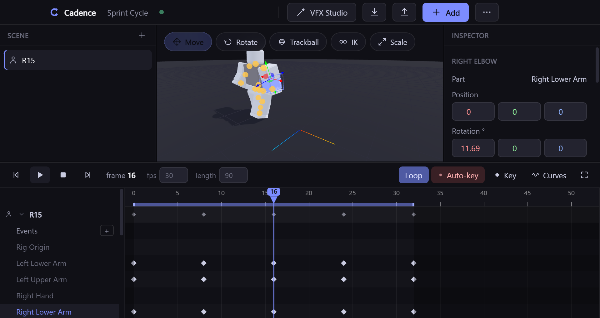

Inverse kinematics
Drag a hand or a foot and the joints above it follow — a solver on the rig’s own motors, landing in the same auto-key and undo as manual posing. Fix a foot slide in one drag.
T
Launching 10 October · Cadence AI
The free Roblox animator is ready to download today. On 10 October, Cadence AI builds a move from your words — real Roblox clips, planted feet, checked.
v0.14.0 · Windows 10 and 11. Windows shows a warning the first time you run it — what it means.
Launching 10 October
On 10 October we open Cadence AI and Cadence subscriptions. Tell it the animation in your head — a fight, a dance, a sprint, a big entrance — and it builds the motion for you. No more blank timelines. This is the one animators have been waiting for.
10 October 2026. Be ready.
Describe a move, and Cadence builds it on your rig from real Roblox clips.
Plain words, like you’d tell a friend.
From real Roblox clips, then it checks the feet.
One tap, and it’s in Roblox Studio.
Cadence AI will arrive as a free update to the app. The installed app checks for updates when it starts and shows a chip in its title bar when a new version is out — no sign-up, no email, nothing to share. So the simplest way to hear first is to get the free animator now.
The release feed is for grown-ups with a feed reader: it lists every new version on GitHub.
These are drawings from the design, not recordings. When Cadence AI ships, clips recorded from the app will take their place.
What you’d type: anime run for my Sukuna character
What you’d type: M1 combo then uppercut
What you’d type: one character scares another
What you’d type: shop NPC waving at players
There’s no chat, so nobody can message you.
No email, no sign-up. Open it and make.
When Cadence AI launches, it reads them to write the plan, then throws them away.
Cadence AI will arrange checked clips. It never invents motion.
Your animations stay on your PC. The safety page lists every connection the app can make, with the line of source code behind each one.
$0forever
The whole animator — plus 3 Cadence AI animations a day, when it launches
$4.99/month· or $39/year, save 35%
Unlimited AI animations and every Cadence vibe
Made and run by Corvexsa — no big AI company in between, so it’s $4.99, not $30.
See pricingAlready bought Pro? You’re a Founder — your key keeps working. Check your key
Available now
A standalone Windows app, not a docked plugin: a real 3D viewport, every Moon Animator 2 keybind, a VFX studio, and two-way sync with Roblox Studio.

Drag a hand or a foot and the joints above it follow — a solver on the rig’s own motors, landing in the same auto-key and undo as manual posing. Fix a foot slide in one drag.
See where the pose came from and where it is going: ghosts of past frames in blue and future frames in orange, drawn from the live rig’s own geometry.
63 shortcuts matched to Moon Animator 2 on purpose, and a 117-command palette behind Ctrl K for everything else. Nothing to relearn.
A dope sheet for timing and a bezier curve editor for feel. Thirteen easing styles in four directions, ported from Moon’s own engine and verified bit-exact — quirks included, so animations match.
Effects as layers you can keyframe, with a 389-node procedural engine underneath — and the Effect Sheet, which makes any effect without learning nodes. One self-contained Luau script out.
A one-file companion plugin brings rigs in and sends KeyframeSequences back over 127.0.0.1. And an MCP server with 207 tools lets Claude animate with you — including screenshots, so it checks its own work.
Moon is very good, and Cadence deliberately matches it — the same easing engine, the same keybinds, the same animatable-property registry, the same AnimSaves convention. What changes is where it runs, what it can reach, and what it costs.
| Moon Animator 2 | Cadence | |
|---|---|---|
| Price | $29.99 list ($19.99 on sale when checked, August 2026) | Free · paid plans for Cadence AI are opening soon |
| Runs as | A Studio plugin, docked in Studio | Its own desktop application |
| Easing engine | 13 styles × 4 directions | The same 13 × 4, ported bit-exact — quirks included |
| Keybinds | Its own set | The same set, matched deliberately — 63 shortcuts |
| Property & action tracks | Yes | Yes — 67 classes, 22 actions |
| Inverse kinematics | — | A solver on the rig’s own motors |
| Onion skinning | — | Past and future ghosts |
| VFX authoring | — | A multi-layer studio plus a 389-node procedural engine, exports Luau |
| Driven by an AI agent | — | 207 MCP tools, including screenshots back |
| Source code | Closed | Public, MIT |
| Live instance manipulation | Writes to Studio instances as you scrub | Authors and exports; Studio applies |
A dash means the feature is not present, not that it is bad. The last row is a place where being a standalone app is a genuine trade-off rather than a win. Moon’s price is from its Creator Store listing.
Windows 10 or 11, 64-bit. No account, no licence key, no telemetry. Files are served from the project’s GitHub release — the same place the in-app updater looks — and every file’s SHA-256 is printed here so you can check it before you run it.
Installs to your user folder — no administrator rights — with Start-menu and desktop shortcuts, and lets you pick the location. This is the build that can update itself in place.
Download installerCadence-Animator-Setup-0.14.0.exeaf55d25c4aa7b8706038ca9800f45f5b4cb819228c7aa5d326b1394426ff685f
One executable, nothing installed. Good for a locked-down machine or a USB stick — but there is nothing on disk for the updater to replace, so new versions are a manual re-download.
Download portableCadence-Animator-0.14.0.exe7673261670da237294a750ed96b6c9d9af4df815bbed6c8234213a1f6cf0099b
Clone it, or install straight from GitHub with npm — which also registers the MCP server with the Claude CLI for you. The build you run is the code you can read.
npm install -g github:alycoulibal2-sketch/Cadence-Animator
cadence-animatorWhat Windows will show you
The first time you run a new release, SmartScreen shows the blue panel. It appears because the file is not code-signed — Windows cannot name a publisher, so it says Unknown publisher. It has not found anything in the file; Defender still scans it like any other download.
The honest plan: a code-signing certificate costs about $150–300 a year, which a free app has no budget for. The paid plans will fund it once they open; when releases are signed, the warning goes away for everyone — the free build included. (Windows 11’s optional Smart App Control blocks unsigned apps outright rather than warning; if you have it on, signing is the only fix.)
Microsoft Defender SmartScreen prevented an unrecognized app from starting. Running this app might put your PC at risk.
App: Cadence-Animator-Setup-0.14.0.exe
Publisher: Unknown publisher
A helper inside Cadence: you describe a move in plain words, and it builds the animation on your rig from real Roblox clips, then checks it — planted feet, smooth hand-overs. It is being built now and is not in the app yet.
It will arrive as a free update, and the free plan will include 3 AI animations a day. How you’ll hear about it.
Yes, and you don’t have to take our word for it: the safety page links every claim to the file that makes it true. In short — the source is public (MIT); the app connects only to your own machine, to Roblox’s asset servers when you load an avatar, to GitHub for update checks, and to Cadence’s licence server if you enter a Pro key; it writes only inside its own %APPDATA% folder and to files you choose; its interface cannot run remote code; and you can hash your download before running it.
The Windows warning you will see is about the missing code signature, not a detection. Here is what it looks like.
AnimSaves folders Moon and Roblox’s Animation Editor use, and identifies rigs by a GUID attribute rather than by name, so it cannot mix up two rigs that share a name. Exports go to a name you choose.